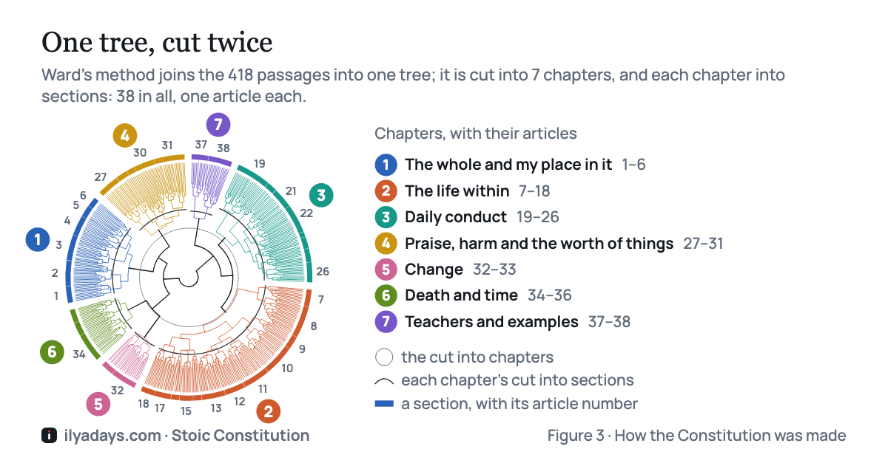
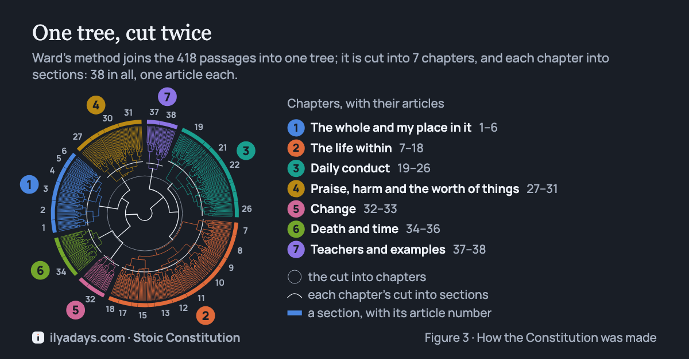
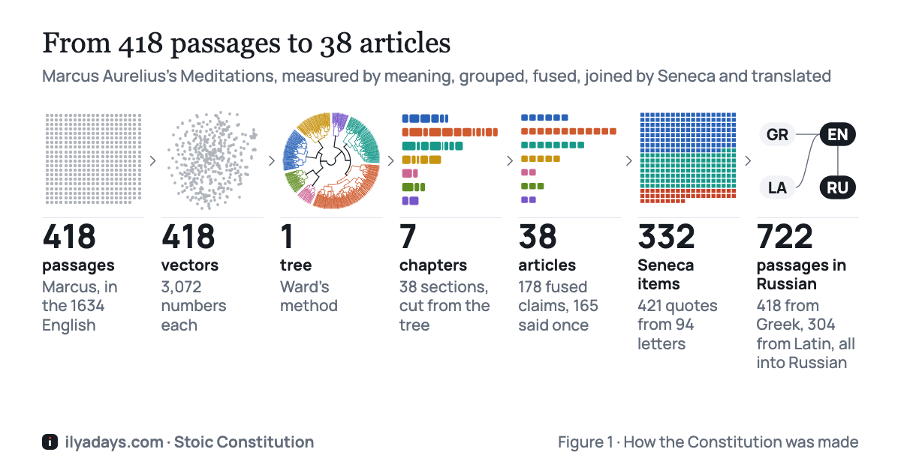
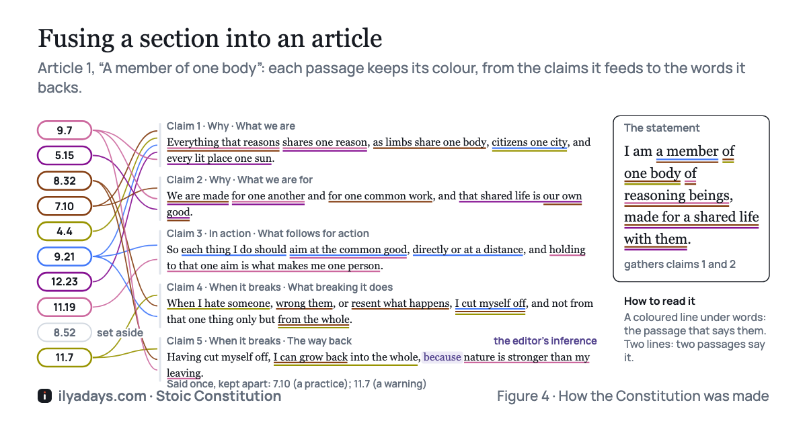
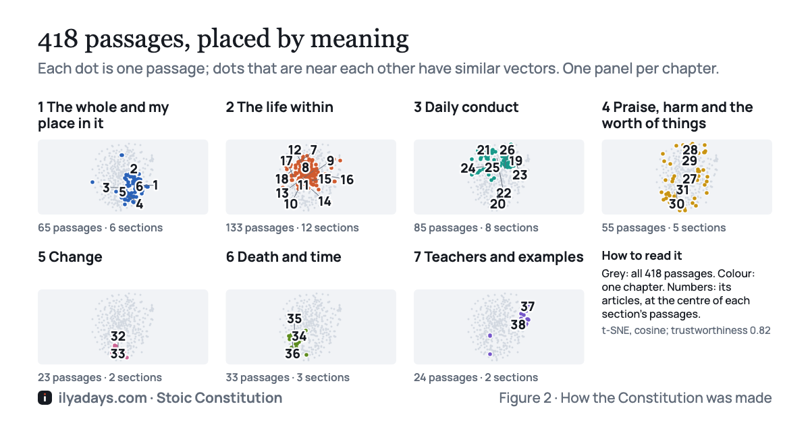
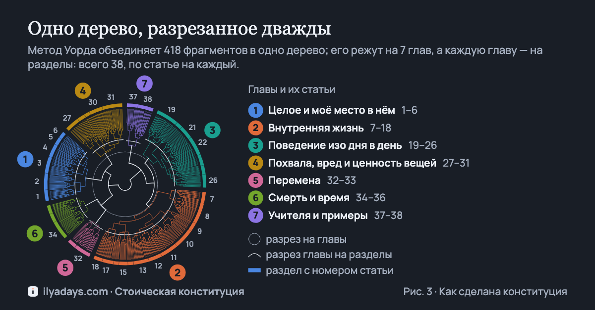
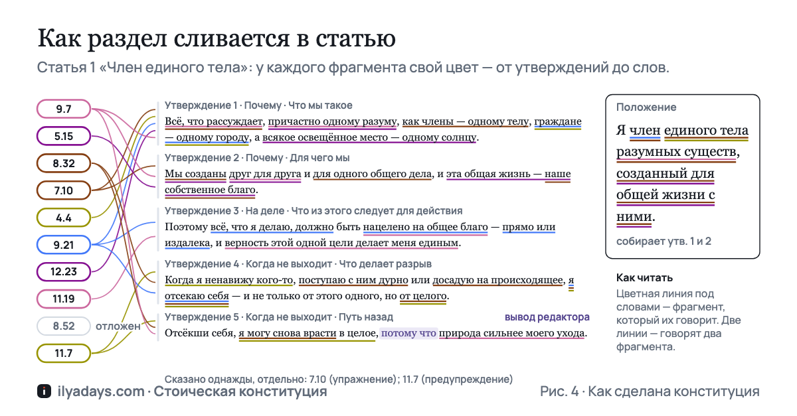
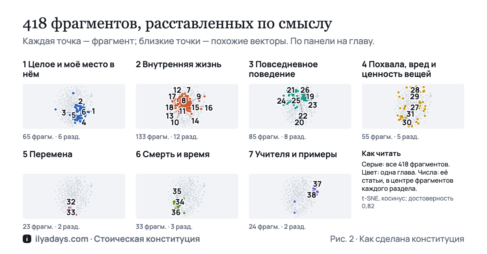

Stoic Constitution · Changelog
What changed
How the Stoic Constitution and its pages have changed, newest first. Each entry says what changed for a reader and links to the place concerned.
The ConstitutionHow it was madeDownload the translations
- 25 NovLatest20261 changeThis changelog, with pictures.
- 24 Nov202613 changesThe literary review, the Constitution in Russian, downloads and a faster, clearer page.
- 23 Nov202610 changesAll 38 articles, Marcus from the Greek, Seneca from the Latin, and both in Russian.
- 11 Nov20261 changeThe groundwork: every passage measured by meaning.
This changelog, with pictures.
A changelog with pictures
SiteEach change on this page is now tagged with its kind and, where it helps, shown with a picture: the download buttons themselves, the review’s edits as a chart, one passage in Greek, English and Russian, and the paper’s figures in light and dark. The dates sit as cards at the top, and the kinds above the log filter it.
The literary review, the Constitution in Russian, downloads and a faster, clearer page.
Download buttons for the translations
TranslationsThe translations have a section of their own at the end of the Constitution page: a card for each of the four books, Marcus and Seneca in English and in Russian, with a button for each format: EPUB for e-readers, Markdown and plain text. On the Russian page the Russian books come first.
English · from the GreekMarcus Aurelius, MeditationsEPUB, Marcus Aurelius, Meditations, in EnglishMarkdown, Marcus Aurelius, Meditations, in EnglishText, Marcus Aurelius, Meditations, in EnglishEnglish · from the LatinSeneca, Moral Letters: a selectionEPUB, Seneca, Moral Letters, in EnglishMarkdown, Seneca, Moral Letters, in EnglishText, Seneca, Moral Letters, in EnglishRussian · from our EnglishMarcus Aurelius, MeditationsEPUB, Marcus Aurelius, Meditations, in RussianMarkdown, Marcus Aurelius, Meditations, in RussianText, Marcus Aurelius, Meditations, in RussianRussian · from our EnglishSeneca, Moral Letters: a selectionEPUB, Seneca, Moral Letters, in RussianMarkdown, Seneca, Moral Letters, in RussianText, Seneca, Moral Letters, in RussianThe four books as they now stand at the end of the Constitution page; each button downloads its file. This changelog
SiteA page that lists what has changed, newest first, in English and in Russian. It is linked from the bar at the top of the Constitution, from the end of its articles and from the method paper.
Better link previews and search listings
SiteA link to one of the Stoic pages, shared in a message or a post, now shows that page’s own title, description and picture, in the language of the link. Search engines are pointed to the Russian version of each page that has one, and can read the Constitution’s 38 articles, each with its statement, without running the page’s script.
ilyadays.com/stoicism
A link to the Constitution, as it now looks in a message: its own picture, title and description. A literary review of every passage and article
ArticlesTranslationsEvery passage of both English translations and of the Russian, and every article in both languages, was read for clarity and taste by a reviewer, then by an independent checker who judged each edit, and every objection was settled in writing; the meaning stays exactly as the Greek, the Latin or the English has it. In English there were 221 edits in 161 passages of Marcus, 191 in 130 sections of Seneca and 1,073 in the articles, with British spelling throughout; in Russian, 613 in 387 passages and 1,712 in the articles. Two articles have new titles: Article 29 is “Upright on my own, and not becoming like those I fight”, and Article 30 “The sameness and foulness of things”.
3,810edits, each judged by a second readerEnglishMarcus 161 passages221Seneca 130 sections191Articles1,073RussianMarcus and Seneca 387 passages613Articles1,712Edits made in the literary review, by text. In Russian, «части тела» for the limbs of a body
TranslationsWhere Marcus and Seneca speak of the limbs of a body, the Russian now says «части тела» rather than «члены»; «член сообщества», a member of a community, stays as it was. Five passages changed, and Article 1 is now titled «Часть единого тела».
7.13Какое отношение имеютчленычасти тела в том, что едино, такое же отношение имеют разумные существа в том, что существует раздельно…Meditations 7.13 in Russian, the old word struck out and the new one underlined: “The relation that the limbs of the body have in things that are united is the relation that rational beings have in things that stand apart…” Articles arrive sooner
ReadingThe Constitution now starts fetching the chapter it opens on at once, so its articles appear sooner. While they load, cards shaped like articles stand in their place under a soft sweep of light, and the articles rise in over them. Under each chapter’s title there is now the chapter’s own summary.
While a chapter loads, cards shaped like its articles hold the place, under a soft sweep of light. Figures in dark colours
MethodEvery figure of the method paper can now be downloaded in dark colours as well as light, under the figure in the paper and in the gallery of figures.

Light
DarkFigure 3 of the paper in light and in dark colours, as the files download. A contents list beside the articles
ReadingOn a wide screen, a contents list is pinned to the left of the Constitution: the seven chapters as buttons, the chapter on screen highlighted with its articles, and the article being read marked.
On a wide screen: the seven chapters on the left, the open chapter with its articles, and the article being read marked. A clearer opening
ReadingThe Constitution now opens with its title and one sentence; how to read an article is a key that unfolds, and the list of chapters is called Contents. Under each article’s title, two small flags and a link to the passages in Greek, today’s English and the 1634 English replace a note that was repeated under every title. In each article the five sides now start on one line, and the vectors begin beside the article’s heading.
How it was made, as a paper
MethodThe account of how the Constitution was made now has a page of its own, in English and in Russian, written as a methods paper: materials, embedding, clustering, fusion, the five sides, Seneca, translation, prompting, the checks and what they found, and the limits. Its eight figures are drawn from the published data, and each can be downloaded for sharing from the gallery. Version 2.1 answers every point of a referee’s review: it states that the seven chapters were a fixed choice, and names among its limits the use of one family of models and the lack of a check against copyrighted translations.

Figure 1 of the paper: from 418 passages to 38 articles. Switches for a smoother read
ReadingTwo switches sit in the bar at the top of the Constitution: Sources shows the passage numbers in the text, and Editor’s decisions shows the editor’s notes and choices. Both start off, for a smoother read, and the page remembers what you choose. The Verdict buttons and the review list are now shown only to the editor, signed in.
Part of the site
SiteThe Stoic pages now share the site’s header, colours and EN · RU switch, and the header stays at the top as you scroll. The Stoicism tab, the address /stoicism and the home page open the Constitution in the site’s language, and the home page has a Stoicism card whose cover draws Marcus Aurelius’s profile as a network of gold points.
The Constitution in Russian
ArticlesAll 38 articles are now in Russian, built and checked under the same rules as the English, with every quote cut from the Russian translation of its passage. The articles’ own words were translated from the English and checked by a second model, and each of its points was settled in writing. The EN · RU switch at the top changes the language, and the page remembers the choice.
ENI am a member of one body of reasoning beings, made for a shared life with them.RUЯ часть единого тела разумных существ, созданная для общей жизни с ними.Article 1’s statement in English and in Russian.
All 38 articles, Marcus from the Greek, Seneca from the Latin, and both in Russian.
Marcus and Seneca in Russian
TranslationsAll 418 passages of Marcus and the 304 sections of Seneca were translated into Russian from the project’s English and checked against it by a second model, and every point was settled in writing. Marcus’s Russian has its own column on the translation page, and both books can be downloaded.
EnglishWhat is not good for the hive is not good for the bee either.RussianЧто не на пользу улью, то не на пользу и пчеле.Meditations 6.54, from the project’s English into Russian. The translations as downloads
TranslationsThe new English translations of Marcus and of Seneca can be downloaded as EPUB, Markdown and plain text, dedicated to the public domain (CC0). Each file opens by saying how it was made and what no one has yet checked.
Seneca, from the Latin
TranslationsSeneca is now quoted in the project’s own translation from the Latin: 304 sections of 94 letters, each translated, checked against the Latin and settled point by point, with new titles for the letters written from the Latin. Every quote of his in the articles was cut again from the new English and reviewed, and Gummere’s translation of 1917–25 is no longer published. How Seneca was added
LatinDucunt volentem fata, nolentem trahunt.EnglishThe fates lead the willing; the unwilling they drag.Letters 107.11: the Latin of its last line and the project’s English. Chapter titles that match their articles
ArticlesEach chapter’s title and summary was checked against its articles. Three summaries were rewritten in the first person, as the articles speak, and one chapter was renamed “Praise, harm and the worth of things”: its old title, “Other minds, fame and harm”, left out its article on the worth of things.
All 38 articles
ArticlesEvery section now has its article, so every chapter is complete. Each article passed the automatic checks and an independent review, and was polished after all 38 had been read side by side: where two overlap, each names the other and says what it adds, and where two disagree, they say so. Article 29 has no fused claim, because no two of its passages say the same thing; its sayings are kept side by side, each on its own.
All 38 articles by chapter; each square opens its article. Article 29, which has no fused claim, is dashed. Marcus, from the Greek
TranslationsAll 418 passages of the Meditations were translated anew from the Greek in three readings: a first translator saw only the Greek, a second reader checked the English against it, and a third settled every point in writing. The translation page shows the Greek, today’s English and the 1634 English side by side, with the notes, and every article now quotes the new English. Where the Greek did not bear out the old wording, the articles changed: Article 5 lost “by nature”, which came from the 1634 translation, not from Marcus.
GreekΤὸ τῷ σμήνει μὴ συμφέρον οὐδὲ τῇ μελίσσῃ συμφέρει.Today’s EnglishWhat is not good for the hive is not good for the bee either.1634 English · 6.49That which is not good for the bee-hive, cannot be good for the bee.Meditations 6.54 as the translation page shows it: the Greek, the new English and the 1634 English, where it is numbered 6.49. Article 6 rebuilt
ArticlesArticle 6, “What the whole sends in its season”, completed the first chapter and was then rebuilt on the new English: only what two passages both say is fused into a claim, and the “so” in its statement is marked in purple as the editor’s own inference. Articles 1 to 5 were checked passage by passage, and reworded where a passage did not say what they claimed of it.
Article 6 · statementWhat the whole brings me is good for me and comes at the right time, so I take its side.Purple marks the editor’s own step: no passage joins the two halves with “so”. Steadier reading
ReadingA link to an article in another chapter now opens that chapter, the counts stay honest when you take a passage out, and the words you picked stay picked. On a phone, the bar folds the article numbers into one button that opens the chapter’s list.
Colours, vectors and a second voice
ReadingEach passage behind an article has its own colour, drawn as a line under the words it backs and repeated on its chip and on the map. Beside each article, a column of vectors shows how close its passages are in meaning, with a live readout as you point at words. Seneca’s Letters join as a second voice, switched on from the Voices bar at the bottom: what he backs and adds in each article, and the clauses he appends to Marcus’s sentences, each marked as his. Article 1 with Seneca

Figure 4 of the paper: each passage’s colour runs under the words it backs. The first five articles
ArticlesThe Constitution begins. The 418 passages of the Meditations are grouped by meaning into seven chapters and 38 sections, and the first five sections are fused into articles: one statement, looked at from five sides (why, in action, practice, when it breaks, if I doubt it), with each phrase traced to the exact words of the passages behind it. For now they quote Meric Casaubon’s English translation of 1634. How a section is fused

Figure 5 of the paper: one statement, five sides, across all 38 articles.

The groundwork: every passage measured by meaning.
The passages measured by meaning
MethodBefore any article, each of the 418 passages of Meric Casaubon’s 1634 translation was turned into a vector of 3,072 numbers that stands for its meaning, so that passages that say similar things lie close together. The chapters and sections of the Constitution were later cut from these vectors. How the passages were embedded

Figure 2 of the paper: the 418 passages placed by meaning.
Dates are the days on which each change was made. The record behind every article, with the scripts and the prompts it was written with, is public: see Appendix B of the method paper.
Стоическая конституция · Журнал изменений
Что изменилось
Как менялись Стоическая конституция и её страницы, начиная с последних изменений. В каждой записи сказано, что изменилось для читателя, и дана ссылка на нужное место.
КонституцияКак это сделаноСкачать переводы
- 25 нояб.Последнее20261 изменениеЭтот журнал изменений — с картинками.
- 24 нояб.202613 измененийЛитературная редактура, конституция по-русски, скачивание и более быстрая и ясная страница.
- 23 нояб.202610 измененийВсе 38 статей, Марк с греческого, Сенека с латыни — и оба по-русски.
- 11 нояб.20261 изменениеОснова: каждый фрагмент измерен по смыслу.
Этот журнал изменений — с картинками.
Журнал изменений с картинками
СайтКаждое изменение на этой странице теперь помечено своей темой и, где это помогает, показано картинкой: сами кнопки скачивания, правки редактуры в виде диаграммы, один фрагмент по-гречески, по-английски и по-русски и рисунки статьи о методе в светлых и тёмных цветах. Даты стоят карточками вверху, а темы над журналом служат фильтром.
Литературная редактура, конституция по-русски, скачивание и более быстрая и ясная страница.
Кнопки для скачивания переводов
ПереводыУ переводов теперь свой раздел в конце страницы конституции: по карточке на каждую из четырёх книг — Марк и Сенека, по-английски и по-русски, — и по кнопке на каждый формат: EPUB для электронных книг, Markdown и простой текст. На русской странице русские книги идут первыми.
Русский · с нашего английскогоМарк Аврелий, «Размышления»EPUB, Марк Аврелий, «Размышления», по-русскиMarkdown, Марк Аврелий, «Размышления», по-русскиТекст, Марк Аврелий, «Размышления», по-русскиРусский · с нашего английскогоСенека, «Нравственные письма»: избранноеEPUB, Сенека, «Нравственные письма», по-русскиMarkdown, Сенека, «Нравственные письма», по-русскиТекст, Сенека, «Нравственные письма», по-русскиАнглийский · с греческогоМарк Аврелий, «Размышления»EPUB, Марк Аврелий, «Размышления», по-английскиMarkdown, Марк Аврелий, «Размышления», по-английскиТекст, Марк Аврелий, «Размышления», по-английскиАнглийский · с латыниСенека, «Нравственные письма»: избранноеEPUB, Сенека, «Нравственные письма», по-английскиMarkdown, Сенека, «Нравственные письма», по-английскиТекст, Сенека, «Нравственные письма», по-английскиЧетыре книги — так, как они теперь стоят в конце страницы конституции; каждая кнопка скачивает свой файл. Этот журнал изменений
СайтСтраница, где по-английски и по-русски перечислено, что менялось, начиная с последних изменений. Ссылки на неё есть в панели вверху конституции, в конце её статей и в статье о методе.
Превью ссылок и поисковая выдача
СайтСсылка на любую из стоических страниц, отправленная в сообщении или в посте, теперь показывает название, описание и картинку самой страницы — на языке ссылки. Поисковикам указана русская версия каждой страницы, у которой она есть, а 38 статей конституции с их положениями они могут прочитать, не запуская скрипт страницы.
ilyadays.com/stoicismТак теперь выглядит ссылка на конституцию в сообщении: своя картинка, название и описание. Литературная редактура всех фрагментов и статей
СтатьиПереводыКаждый фрагмент обоих английских переводов и русского и каждую статью на обоих языках прочитал рецензент — на ясность и вкус, затем независимый проверяющий оценил каждую его правку, и каждое возражение было решено письменно; смысл остался ровно таким, каким его даёт греческий, латинский или английский текст. По-английски — 221 правка в 161 фрагменте Марка, 191 — в 130 разделах Сенеки и 1073 — в статьях, и везде британское написание; по-русски — 613 правок в 387 фрагментах и 1712 — в статьях. У двух статей новые названия: статья 29 — «Стоять прямо самому и не становиться таким, как те, с кем я борюсь», статья 30 — «Однообразие и грязь вещей».
3810правок, и каждую оценил второй читательПо-английскиМарк 161 фрагмент221Сенека 130 разделов191Статьи1073По-русскиМарк и Сенека 387 фрагментов613Статьи1712Правки литературной редактуры по текстам. «Части тела» вместо «членов»
ПереводыТам, где Марк и Сенека говорят о частях тела, русский перевод теперь так и говорит — «части тела», а не «члены»; «член сообщества» остался как был. Изменились пять фрагментов, а статья 1 теперь называется «Часть единого тела».
7.13Какое отношение имеютчленычасти тела в том, что едино, такое же отношение имеют разумные существа в том, что существует раздельно…Фрагмент 7.13 «Размышлений»: прежнее слово зачёркнуто, новое подчёркнуто. Статьи появляются быстрее
ЧтениеКонституция теперь сразу начинает загружать главу, с которой открывается, поэтому статьи появляются быстрее. Пока они загружаются, на их месте стоят карточки в форме статьи, по которым пробегает мягкий блик, а затем статьи поднимаются поверх них. Под названием каждой главы теперь её краткое содержание.
Пока глава загружается, её место держат карточки в форме статей, по которым пробегает мягкий блик. Рисунки в тёмных цветах
МетодКаждый рисунок статьи о методе теперь можно скачать не только в светлых, но и в тёмных цветах — под рисунком в самой статье и в галерее рисунков.
 Светлый
Светлый
ТёмныйРис. 3 статьи о методе в светлых и в тёмных цветах — такими файлы и скачиваются. Содержание рядом со статьями
ЧтениеНа широком экране слева от конституции закреплено содержание: семь глав в виде кнопок, глава на экране выделена вместе со своими статьями, а статья, которую читают, отмечена.
На широком экране: семь глав слева, открытая глава со своими статьями и отмеченная статья, которую читают. Яснее с первого экрана
ЧтениеКонституция теперь открывается своим названием и одной фразой; как читать статью, объясняет пояснение, которое раскрывается по нажатию, а список глав называется «Содержание». Под названием каждой статьи вместо примечания, повторявшегося под каждым заголовком, — две маленькие метки и ссылка на фрагменты по-гречески, в новом английском переводе и в переводе 1634 года. Пять сторон каждой статьи теперь начинаются на одной линии, а векторы — рядом с её заголовком.
Как это сделано — в виде научной статьи
МетодРассказ о том, как сделана конституция, вынесен на отдельную страницу на английском и на русском и написан как научная статья о методе: материалы, векторы, кластеризация, слияние, пять сторон, Сенека, перевод, промпты, проверки и их результаты, ограничения. Восемь рисунков построены по опубликованным данным, и каждый можно скачать для публикации из галереи. Версия 2.1 отвечает на каждое замечание рецензента: в ней сказано, что семь глав — заранее заданный выбор, а среди ограничений названы одно семейство моделей и отсутствие сверки с переводами, охраняемыми авторским правом.

Рис. 1 статьи о методе: от 418 фрагментов к 38 статьям. Переключатели для спокойного чтения
ЧтениеВ панели вверху конституции два переключателя: «Источники» — номера фрагментов в тексте и «Решения редактора» — заметки и выбор редактора. Оба по умолчанию выключены, чтобы читать было спокойнее, и страница запоминает ваш выбор. Кнопки «Оценка» и список отзыва теперь видит только редактор, войдя на сайт.
Часть сайта
СайтУ стоических страниц теперь общие с сайтом шапка, цвета и переключатель EN · RU, а шапка остаётся вверху при прокрутке. Вкладка «Стоицизм», адрес /stoicism и главная страница открывают конституцию на языке сайта, а на главной появилась карточка «Стоицизм» с обложкой: профиль Марка Аврелия, нарисованный сетью золотых точек.
Конституция по-русски
СтатьиВсе 38 статей теперь есть по-русски; они собраны и проверены по тем же правилам, что и английские, а каждая цитата вырезана из русского перевода своего фрагмента. Слова самих статей переведены с английского и сверены другой моделью, а каждое её замечание решено письменно. Язык меняет переключатель EN · RU вверху, и страница запоминает выбор.
ENI am a member of one body of reasoning beings, made for a shared life with them.RUЯ часть единого тела разумных существ, созданная для общей жизни с ними.Положение статьи 1 по-английски и по-русски.

Все 38 статей, Марк с греческого, Сенека с латыни — и оба по-русски.
Марк и Сенека по-русски
ПереводыВсе 418 фрагментов Марка и 304 раздела Сенеки переведены на русский с английского перевода проекта и сверены с ним другой моделью, а каждое замечание решено письменно. У русского текста Марка своя колонка на странице перевода (сама страница на английском), и обе книги можно скачать.
АнглийскийWhat is not good for the hive is not good for the bee either.РусскийЧто не на пользу улью, то не на пользу и пчеле.Фрагмент 6.54 «Размышлений»: с английского перевода проекта на русский. Переводы для скачивания
ПереводыНовые английские переводы Марка и Сенеки можно скачать в форматах EPUB и Markdown и простым текстом; они переданы в общественное достояние (CC0). Каждый файл начинается с того, как он сделан и чего ещё никто не проверил.
Сенека — с латыни
ПереводыСенека теперь цитируется в собственном переводе проекта с латыни: 304 раздела из 94 писем, каждый переведён, сверен с латынью и решён по пунктам, а письма получили новые названия, написанные по латинскому тексту. Каждая его цитата в статьях заново вырезана из нового английского и прошла рецензию, а перевод Гаммера 1917–1925 годов больше не публикуется. Как добавлен Сенека
ЛатыньDucunt volentem fata, nolentem trahunt.АнглийскийThe fates lead the willing; the unwilling they drag.Письма, 107.11: латынь последней строки и английский перевод проекта. Названия глав совпадают со статьями
СтатьиНазвание и краткое содержание каждой главы сверены с её статьями. Три кратких содержания переписаны от первого лица, как говорят сами статьи, а одна глава получила новое название — «Похвала, вред и ценность вещей»: прежнее не упоминало её статью о ценности вещей.
Все 38 статей
СтатьиУ каждого раздела теперь есть статья, и все главы закончены. Каждая статья прошла автоматические проверки и независимую рецензию, а затем была отшлифована после того, как все 38 прочитали рядом: где две статьи пересекаются, каждая называет другую и говорит, что добавляет сама, а где они расходятся, они говорят об этом прямо. В статье 29 нет слитого утверждения, потому что никакие два её фрагмента не говорят одного и того же; её изречения стоят рядом, каждое само по себе.
Все 38 статей по главам; каждый квадрат открывает свою статью. Статья 29, у которой нет слитого утверждения, обведена пунктиром. Марк — с греческого
ПереводыВсе 418 фрагментов «Размышлений» заново переведены с греческого в три прочтения: первый переводчик видел только греческий, второй читатель сверил с ним английский, третий письменно решил каждое замечание. Страница перевода показывает рядом греческий, новый английский и английский 1634 года вместе с примечаниями, а все статьи теперь цитируют новый английский. Там, где греческий не подтверждал прежних слов, статьи изменились: из статьи 5 ушли слова «от природы» — их нет у Марка, они из перевода 1634 года.
ГреческийΤὸ τῷ σμήνει μὴ συμφέρον οὐδὲ τῇ μελίσσῃ συμφέρει.Новый английскийWhat is not good for the hive is not good for the bee either.Английский 1634 года · 6.49That which is not good for the bee-hive, cannot be good for the bee.Фрагмент 6.54 «Размышлений» на странице перевода: греческий, новый английский и английский 1634 года, где он под номером 6.49. Статья 6 перестроена
СтатьиСтатья 6 «Что целое посылает в свой срок» завершила первую главу, а затем была перестроена на новом английском: в утверждение слито только то, что говорят оба фрагмента, а «поэтому» в её положении отмечено фиолетовым как собственный вывод редактора. Статьи с 1-й по 5-ю проверены фрагмент за фрагментом и исправлены там, где фрагмент не говорил того, что статья ему приписывала.
Статья 6 · положениеТо, что приносит мне целое, хорошо для меня и приходит вовремя, поэтому я на его стороне.Фиолетовым отмечен собственный шаг редактора: ни один фрагмент не соединяет две половины словом «поэтому». Надёжнее при чтении
ЧтениеСсылка на статью из другой главы теперь открывает эту главу, счётчики остаются честными, когда убираешь фрагмент, а выбранные слова остаются выбранными. На телефоне панель сворачивает номера статей в одну кнопку, которая открывает список статей главы.
Цвета, векторы и второй голос
ЧтениеУ каждого фрагмента, на котором стоит статья, свой цвет: им проведена линия под словами, которые он подтверждает, и тот же цвет у его кнопки и на карте. Рядом с каждой статьёй — колонка векторов: насколько близки по смыслу её фрагменты, с показанием, которое меняется, когда наводишь на слова. Вторым голосом вошли «Письма» Сенеки; их включают на панели «Голоса» внизу экрана: что он подкрепляет и добавляет в каждой статье и какие приписки делает к фразам Марка, каждая помечена как его. Статья 1 с Сенекой

Рис. 4 статьи о методе: цвет каждого фрагмента идёт под словами, которые он подтверждает. Первые пять статей
СтатьиНачало конституции. 418 фрагментов «Размышлений» сгруппированы по смыслу в семь глав и 38 разделов, и первые пять разделов слиты в статьи: одно положение, рассмотренное с пяти сторон (почему, на деле, упражнение, когда не выходит, если я сомневаюсь), и каждая фраза прослежена до точных слов фрагментов, стоящих за ней. Пока статьи цитируют английский перевод Мерика Казобона 1634 года. Как раздел сливается в статью

Рис. 5 статьи о методе: одно положение, пять сторон — во всех 38 статьях.

Основа: каждый фрагмент измерен по смыслу.
Фрагменты, измеренные по смыслу
МетодЕщё до первой статьи каждый из 418 фрагментов английского перевода Мерика Казобона 1634 года превращён в вектор из 3072 чисел, выражающий его смысл, так что фрагменты, говорящие похожее, оказываются рядом. Позже из этих векторов нарезаны главы и разделы конституции. Как фрагменты превращены в векторы

Рис. 2 статьи о методе: 418 фрагментов, расставленных по смыслу.
Даты — дни, когда было сделано каждое изменение. Данные, на которых стоит каждая статья, вместе со скриптами и промптами, с которыми она написана, открыты: см. приложение B к статье о методе.